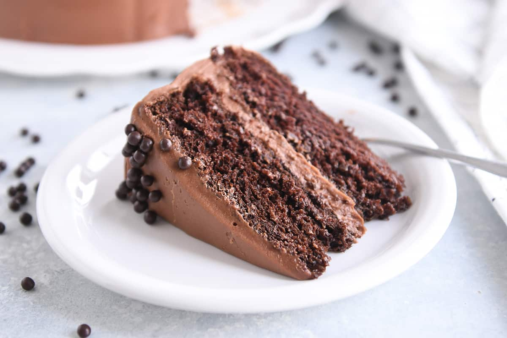
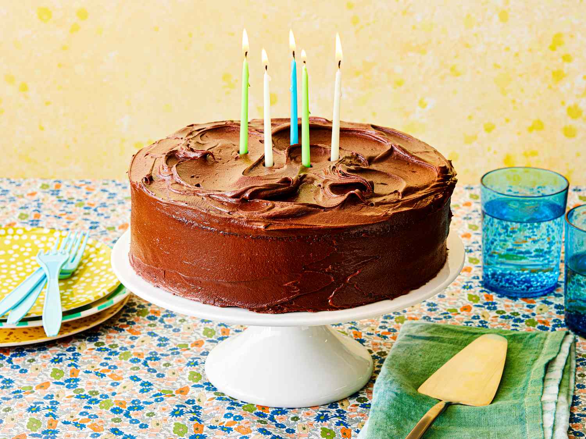
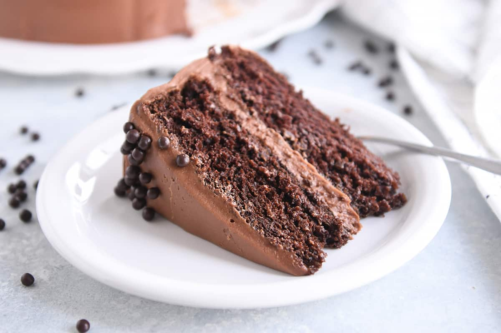
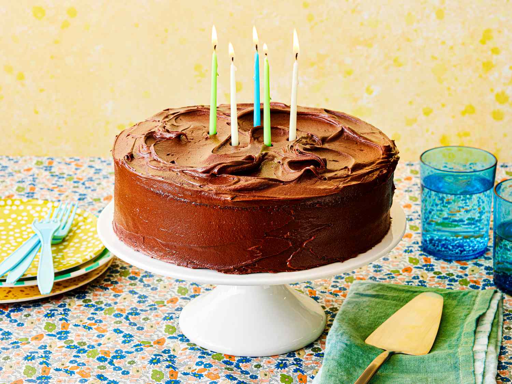

Chocolate Chip Cookies
Origin: American
Source: Simply Recipes
Category: Dessert
Chocolate chip cookies are a go-to favorite dessert, sweet snack, or after-school treat. With our easy, three-step recipe, you'll have soft and chewy chocolate chip cookies to serve and enjoy in no time.
Chocolate chip cookies are a household favorite, a timeless classic, an unparalleled snack, warm, cold, dunked in milk, in dough form, or in baked form. No one can resist the comfort of a chocolate chip cookie and everyone has their favorite recipe whether it's on the back of the yellow Toll House bag or scribbled in your grandmother's recipe book.
Ingredients
- 2 1/4 cups all-purpose flour
- 1 teaspoon baking soda
- 1 teaspoon salt
- 1 cup (2 sticks) butter, softened
- 3/4 cup granulated sugar
- 3/4 cup packed brown sugar
- 1 teaspoon vanilla extract
- 2 large eggs
- 2 cups chocolate chips
Directions
- Preheat oven to 375° F.
- Combine flour, baking soda and salt in small bowl. Beat butter, granulated sugar, brown sugar and vanilla extract in large mixer bowl until creamy. Add eggs, one at a time, beating well after each addition. Gradually beat in flour mixture. Stir in chocolate chips.
- Drop by rounded tablespoon onto ungreased baking sheets.
- Bake for 9 to 11 minutes or until golden brown. Cool on baking sheets for 2 minutes; remove to wire racks to cool completely.
Image Gallery
Chicken Parmesan
Origin: Italian
Source: Simply Recipes
Category: Main Dish

Chicken Parmesan is a classic for a reason! Chicken cutlets, breaded and fried, smothered with tomato sauce, and covered with mozzarella and Parmesan cheeses are so good. Serve with pasta or on a roll.
Ingredients
- 4 chicken cutlets (about 1 1/2 pounds total), pounded to 1/4-inch thickness
- 1/2 cup all-purpose flour
- 2 large eggs, lightly beaten
- 1 cup panko breadcrumbs
- 1/2 cup grated Parmesan cheese
- 1/4 cup olive oil
- 1/2 teaspoon kosher salt
- 1/4 teaspoon freshly ground black pepper
- 1 1/2 cups marinara sauce
- 4 ounces fresh mozzarella cheese, sliced
- 1/4 cup chopped fresh basil leaves
Directions
- Preheat the oven to 400°F. Line a baking sheet with parchment paper.
- Place the flour, eggs, and panko in three separate shallow bowls. Add the Parmesan to the panko and stir to combine. Dip each chicken cutlet first in the flour, then the egg, and then the panko mixture, pressing the panko onto the chicken to help it adhere. Place the breaded chicken on the baking sheet.
- Heat the oil in a large frying pan over medium-high heat until shimmering. Add the chicken and cook until golden-brown, 2 to 3 minutes per side. Transfer the chicken to a 9x13-inch baking dish and season with the salt and pepper. Pour the marinara sauce over the chicken and top with the mozzarella.
- Bake until the chicken is cooked through and the cheese is melted and bubbling, 15 to 20 minutes. Remove from the oven and let sit for 5 minutes. Sprinkle with the basil and serve.
Image Gallery


Chocolate Cake
Origin: American
Source: Simply Recipes
Category: Dessert

Chocolate cake is made with chocolate. It can also include other ingredients. These include fudge, vanilla creme, and other sweeteners.The history of chocolate cake goes back to 1764, when Dr. James Baker discovered how to make chocolate by grinding cocoa beans between two massive circular millstones.
In 1828, Conrad Van Houten of the Netherlands developed a mechanical extraction method for extracting the fat from cacao liquor resulting in cacao butter and the partly defatted cacao, a compacted mass of solids that could be sold as it was "rock cacao" or ground into powder. The processes transformed chocolate from an exclusive luxury to an inexpensive daily snack. A process for making silkier and smoother chocolate called conching was developed in 1879 by Rodolphe Lindt and made it easier to bake with chocolate as it amalgamates smoothly and completely with cake batters.
Ingredients
- 2 cups white sugar
- 1 ¾ cups all-purpose flour
- ¾ cup unsweetened cocoa powder
- 1 ½ teaspoons baking powder
- 1 ½ teaspoons baking soda
- 1 teaspoon salt
- 2 eggs
- 1 cup milk
- ½ cup vegetable oil
- 2 teaspoons vanilla extract
- 1 cup boiling water
Directions
- Preheat oven to 350 degrees F (175 degrees C). Grease and flour two nine inch round pans.
- In a large bowl, stir together the sugar, flour, cocoa, baking powder, baking soda and salt. Add the eggs, milk, oil and vanilla, mix for 2 minutes on medium speed of mixer. Stir in the boiling water last. Batter will be thin. Pour evenly into the prepared pans.
- Bake 30 to 35 minutes in the preheated oven, until the cake tests done with a toothpick. Cool in the pans for 10 minutes, then remove to a wire rack to cool completely.
Image Gallery
 



Chicken Noodle Soup
Origin: American
Source: Simply Recipes
Category: Comfort Food

Chicken noodle soup is a soup made from chicken, simmered in water, usually with various other ingredients. The classic chicken soup consists of a clear chicken broth, often with pieces of chicken or vegetables; common additions are pasta, noodles, dumplings, or grains such as rice and barley.
Chicken soup has acquired the reputation of a folk remedy for colds and influenza, and in many countries is considered a comfort food.
Ingredients
- 1 tablespoon olive oil
- 1 medium yellow onion chopped
- 3 medium carrots peeled and sliced into 1/4" thick pieces
- 2 stalks celery sliced into 1/4" thick pieces
- 1/2 teaspoon dried thyme
- 4 cloves garlic minced
- 4 cups chicken broth
- 3/4 lb. boneless skinless chicken breasts
- 1 bay leaf
- 2 1/2 cups uncooked wide egg noodles
- 1 tablespoon chopped fresh parsley
- 1 tablespoon fresh lemon juice
- Salt and pepper to taste
Directions
- Heat olive oil in a large pot over medium-high heat. Add onion, carrots and celery and saute 4 minutes then add garlic and saute 30 seconds longer.
- Add chicken broth, chicken, thyme, bay leaf and season with salt and pepper to taste. Bring to a boil, then reduce heat to medium-low, cover with lid and allow to simmer until chicken has cooked through, about 10 - 15 minutes (cook time will vary based on thickness of chicken breasts).
- Remove chicken and allow to rest 5 minutes, then shred into small bite size pieces.
- Meanwhile, add egg noodles to soup and boil until tender, about 8 - 10 minutes. Stir in parsley, lemon juice and return chicken to soup. Serve warm.
Image Gallery
Chocolate Chip Pancakes
Origin: American
Source: Simply Recipes
Category: Breakfast
Chocolate chip pancakes are a sweet breakfast treat that's so easy to make! My kids love these pancakes and gobble them up. They're perfect for a special occasion or weekend breakfast.
These pancakes are light and fluffy and loaded with chocolate chips. They're so easy to make and are perfect for a special occasion or weekend breakfast. Serve them with fresh fruit and whipped cream for a real treat!
Ingredients
- 1 1/2 cups all-purpose flour
- 3 1/2 teaspoons baking powder
- 1 teaspoon salt
- 1 tablespoon white sugar
- 1 1/4 cups milk
- 1 egg
- 3 tablespoons butter, melted
- 1/2 cup mini chocolate chips
Directions
- In a large bowl, sift together the flour, baking powder, salt and sugar. Make a well in the center and pour in the milk, egg and melted butter; mix until smooth. Add chocolate chips.
- Heat a lightly oiled griddle or frying pan over medium high heat. Pour or scoop the batter onto the griddle, using approximately 1/4 cup for each pancake. Brown on both sides and serve hot.